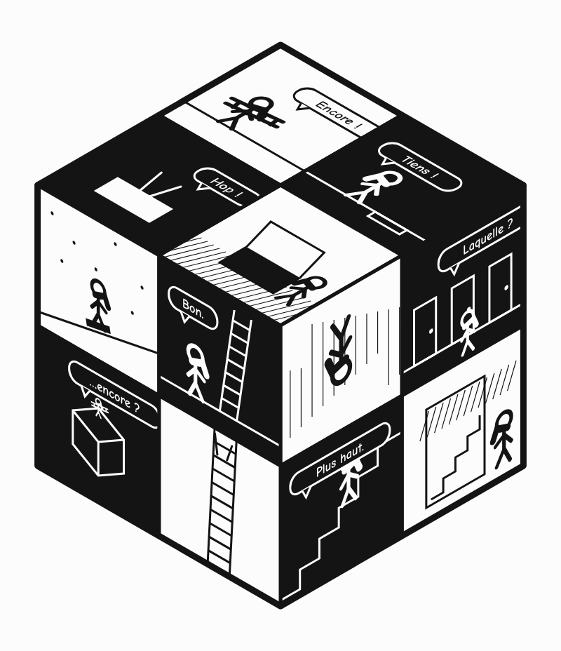

d’après Killoffer
轉著讀
十二格畫在一個立方體的三個面上，每一格的透視都跟著那一面走。照下面的閱讀順序圖，從 1 走到 12：先讀頂面，再讀右面、左面，一邊讀一邊把立方體轉一圈。
對白
Encore un toit… et encore une porte. On monte, on descend — et on revient toujours au même endroit.
「又一個屋頂……又一扇門。爬上去、掉下來——最後總是回到同一個地方。」
- Encore !又來了！
- Tiens !咦！
- Hop !嘿！
- Laquelle ?哪一扇？
- Plus haut.再高一點。
- Bon.好。
- …encore ?……又來？
